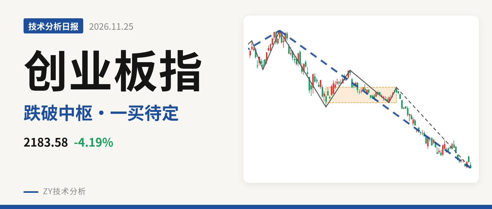

创业板指｜暂定一买现2184点，背驰信号待确认

最近日线中枢 3227.18—3472.47点，收盘位于中枢之下
一句话：下跌段延续中暂现一买，面积缩量DIF未配合
📉 走势结构：下跌段延续，更大级别上涨未破
6月25日以来的日线下跌段从4380.41点跌至2183.58点，跌约50%，还在延续。更大级别上，2024年2月5日开启的上涨走势（1482.99→4380.41点）尚未结束，但本轮调整已将前期涨幅回吐过半。若后续不再跌破1482.99点，更大级别上涨结构仍在；一旦跌破，则该上涨段宣告结束。当前处于大级别上涨中的深度回调阶段，方向上以日线下跌段为准。

📊 中枢与位置：中枢下移，价格跌入历史线段中枢
最近完成的日线笔中枢为7月30日至9月22日的3227.18—3472.47点，中轴3349.83点。最新收盘2183.58点位于中枢下方，低于下沿约32%，中枢明显下移。对比前一个笔中枢（2025年5月14日至2025年6月23日的1996.96—2076.91点），中枢曾从2000点一线跃升至3300点一线，如今价格已跌回前中枢上方但进入更早的线段中枢——2022年4月27日至2023年8月4日的2122.32—2282.65点，中轴2202.48点，当前价落入该区间内。
🔍 买卖点：暂定一买出现，线段三买已破
11月25日出现暂定的一买2183.58点，所在下跌笔9月22日至11月25日尚未结束，该一买会随这笔下跌的延续而变化。此前3月9日的线段级别三买3111.88点已被后续下跌彻底破坏——价格从3111.88点一路跌至2183.58点，跌近30%，该三买不再有效。线段级别最近的有效买点仍为2025年4月7日的二买1756.64点，当前价在其上方约430点。

⚡ 背驰：面积缩量，DIF未配合
比较6月25日至7月30日下跌笔与9月22日至11月25日下跌笔：前者从4380.41点跌至3158.14点，绿柱面积1837，DIF低点-171.1；后者从3472.47点跌至2183.58点，绿柱面积1110，DIF低点-204.5。价格创出新低，绿柱面积明显缩小，面积上呈现"新低不新弱"；但DIF低点从-171.1下探至-204.5，同步创出新低，力度上并未配合。面积缩量而DIF新低，背驰信号不够充分，这也是一买标注为暂定的结构原因。
🎯 关键位置：上方看中枢下沿，下方看线段中枢
反弹若回不到3227点上方（7月30日至9月22日中枢下沿），结构上构成三卖，下跌段将继续延伸。若重新站上3227点，则当前下跌更可能只是中枢扩展，而非趋势性下行。下方2122—2283点一线（2022年4月27日至2023年8月4日线段中枢）是重要结构参考，当前价已进入该区间。若在该区间内止跌并形成底分型，配合绿柱面积持续缩量，暂定一买才有望确认。当前弱势明确：价格远离中枢、DIF仍在零轴下方且创新低，反弹力度是后续观察核心。
⚠️ 本文为基于公开行情数据的缠论技术结构记录，由程序自动计算并生成，仅供学习交流，不构成任何投资建议。市场有风险，投资需谨慎。